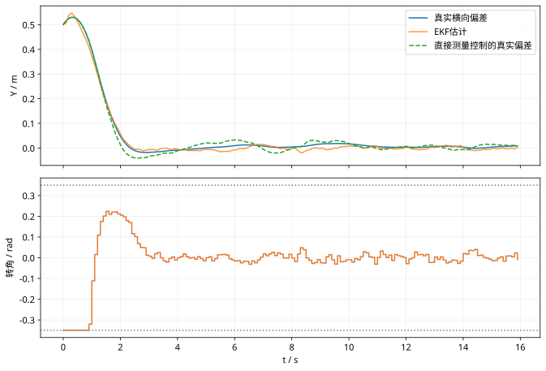

第 46 课：EKF与MPC车辆跟踪综合实验
阶段 4 · 用可运行的低速车辆示例串起测量、估计、预测优化和执行反馈。
1. 本实验包含什么？
车辆后轴模型为第 41 课的非线性运动学自行车模型；任务是在恒定低速下跟踪直线 $Y=0,\psi=0$。测量为带噪声的 X、Y、航向；EKF 融合已知速度、上一拍转角与当前测量；MPC 用估计的 $[Y,\psi]$ 生成受幅值约束的转角。
这是教学基线：不包含障碍物、换挡、侧滑、转向速率限制、定位延迟或实车安全回退。
2. 一拍的时间顺序
- 在当前时刻获得测量，先完成 EKF 校正。
- 用后验位置与航向构造 MPC 初态。
- 优化 N 步转角序列，执行第一项。
- 真实非线性车辆前进一步；EKF 用同一个已执行输入预测到下一拍。
- 下一拍获得新测量后重新校正与优化。
输入与测量必须对齐时间戳。若先更新状态，再把旧测量当作新测量，估计器会持续出现时序残差。
3. 参数和求解方法
取 $T_s=0.1$ s、$v=2$ m/s、$L=2.5$ m、N=20、$|\delta|\le0.35$ rad，初始真实位姿为 $[0,0.5,0.08]$。测量标准差为 $[0.05,0.05,0.01]$，EKF 内使用它们的平方构造 R。
MPC 的状态权重为 $Q=\operatorname{diag}(5,2)$、输入权重为 0.5，终端状态用同一个 Q。它不是带终端稳定性设计的完整工程 MPC。箱约束 QP 使用投影梯度求解：
$$ U^{j+1}=\operatorname{clip}_{[U_{\min},U_{\max}]}(U^j-\alpha(HU^j+g)),\qquad \alpha=1/\lambda_{\max}(H). $$
H 正定，因此这个步长适合凸箱约束问题。停止时还应检查投影梯度残差；固定迭代次数不等同于已精确求解。
4. 下载并运行完整脚本
脚本只依赖 NumPy，固定随机种子，输出 CSV 和数值指标。运行方式：
python simulation.py脚本把真实模型和估计器使用的离散模型写在一起方便核对，但它们的状态存储彼此独立；EKF 只使用输入与噪声测量，不读取真值校正自己。Q 是模型不确定性设置，本实验真实车辆没有额外注入过程扰动，故不适合直接用于验证严格统计一致性。
5. 应该看哪些结果？
同时查看真实横向偏差、估计偏差、转角，以及 QP 投影梯度残差。转角受限时，初始纠偏需要时间；估计曲线有噪声时控制也可能微动。不要只用“最后到零”评价全程表现。
6. 按一次一个因素做消融
先保持真实轨迹和随机种子不变，比较直接用噪声测量控制与使用 EKF 控制。再分别改变测量噪声、估计初值、转角边界和预测时域，记录横向 RMSE、最大转角和求解残差。改变每拍实际噪声序列会混淆方法差异。
若把速度或轴距设错，应分别在对象、EKF 和 MPC 中说明使用了哪个值。只改一份公共变量，相当于同时改了对象和控制器，不能称作模型误差实验。
7. 阶段验收
能从测量与协方差出发，完成估计更新，写出预测模型、代价和约束，核对实际输入与时序，并解释模型和求解器的适用条件，就形成了从状态估计到约束控制的完整学习链。
图示核对

固定种子7的综合脚本结果：比较估计反馈与直接测量反馈，并检查执行转角始终处于正负0.35 rad内。